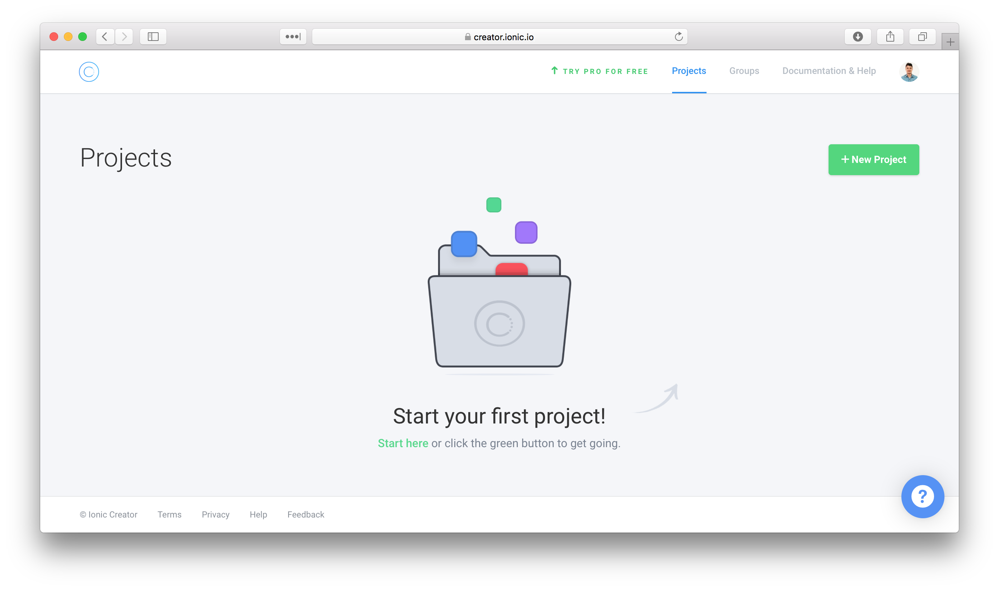

Rewriting the KNoT Gateway client with Ionic
Thiago Figueredo Cardoso
KNoT?
Gateway client?
Rewrite?
Ionic?
The open source meta platform for IoT
KNoT?
Gateway client?
Rewrite?
Ionic?


Current gateway client is a web app
- Mongo
- Express
- Angular (1.x) + Bootstrap
- Node

KNoT?
Gateway client?
Rewrite?
Ionic?
Problems
- No package management or build system
- Old versions of AngularJS and JS (ES5)
- Non-responsive layout
- Fragile back-end
- Lack of developers
Improve current or rewrite?
Replace with an Android app?
Use a hybrid app framework?
React Native, Native Script or Ionic?
Hybrid apps
One code base.
Running everywhere.
Open source
(MIT)
Application is a web app inside a web view
Getting started
$ npm install -g cordova ionic
$ ionic start MyApp blank
$ cd MyApp
$ ionic serve
Alternative: Ionic Creator
- 

Ionic bootstrap

Configuration files:
- TypeScript
- Node
- Cordova
Ionic bootstrap

Progressive Web App stuff
Ionic bootstrap
Mobile assets:
- Splash
- Icons
- ...
Ionic bootstrap
The application:
- app: main module
- pages: page modules
- theme: theming SASS files
Ionic bootstrap
The ion-nav is the basic navigation component.
Ionic bootstrap
import ...
@Component({
templateUrl: 'app.html'
})
export class MyApp {
rootPage:any = HomePage;
constructor(platform: Platform, ...) {
platform.ready().then(() => {
statusBar.styleDefault();
splashScreen.hide();
});
}
}
Ionic bootstrap

Ionic Blank
The world is your oyster.
Basic page structure is ion-header and ion-content.
The prototype
Ordinary CRUD application:
- Sign in form
- Devices list (read/update)
with gateway search as mobile-only feature.
Main doubts
- How is a form view written?
- How is a list view written?
- How to update list views in real-time?
- How to split mobile-only and common features?
- How to handle different devices (Android, iOS, Desktop) and screen sizes?
Evaluation guidelines
- How to use (or look like) native view components?
- Does the framework provide it out-of-the-box? If not, how easy it is to implement a custom solution?